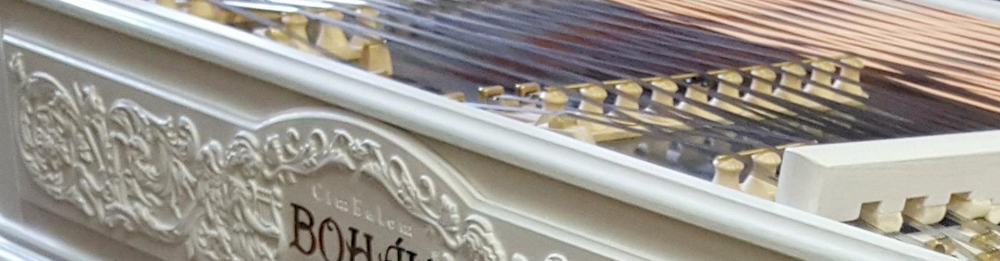

Historie
K masivnímu rozšíření cimbálu jako nástroje, došlo v 19. století, kdy se dočkal mnoha technických inovací, které představila firma Schunda pod vedením Josefa Václava Schundy. O práci v této firmě se zajímal i mladý Lájos Bohák (narodil se 6.8.1870 v obci Kvetná na Slovensku), ale zaměstnání zde nedostal a výrobě cimbálů se posléze naučil v dílně K. Varji a už v roce 1896 slavil úspěch na hospodářské výstavě se svým koncertním bílým cimbálem. Díky tomu si mohl otevřít svou vlastní dílnu.
Už pred první svetovou válkou se stal velkým konkurentem J. V. Schundy. Do konstrukce cimbálů vnesl několik podstatných inovací a výrazně vylepšil původní pedalizační systém. Tento nový způsob vzápětí uznal a převzal i sám Schunda. Po smrti Lájosa Boháka prebral firmu jeho syn, Lajos Bohák ml.
Vznik společnosti Cimbalom Bohák

2013
V roce 2013 vzniká spoločnosť Cimbalom BOHÁK s. r. o., ktorá sa zaoberá precíznou výrobou a predajom cimbalov zn. BOHÁK a ostatného vybavenia tohto typu zamerané pre konzervatória, základné umelecké školy (ZUŠ), folklórne súbory, známych alebo menej známych muzikantov. Společnost je oprávněna používat tradiční a svetoznámou maďarskou značku cimbalov BOHÁK a naďalej pokračuje v šírení dobrého mena a hudobných kvalít tohto výnimočného nástroja.
Výroba cimbálu v součastnosti
2019
Našim grom je inovovaná technológia pre dosiahnutie najvyšších kvalít zvukovej ale i estetickej stránky. Naši majstri dbajú na zachovanie kvality tejto dlhoročnej tradície, ktoré značku Bohák preslávili a urobili najobľúbenejšou značkou cimbalov po celom svete. Spolupracujeme s najlepšími umeleckými rezbármi, ktorí pre cimbaly Bohák vytvárajú prepracované rezby s pečaťou originality. Súčasne s tradíciou ide ruka v ruke aj pokrok, ktoré našim cimbalom dodávajú stále vyššiu kvalitu potrebnú pre moderného cimbalistu. Takmer všetky použité komponenty sú laboratórne testované a naše cimbaly sú vyrábané s osvedčeným certifikátom kvality. S postupným rozšiřováním výroby se společnost přejmenovává na Bohák Manufactury, s.r.o..